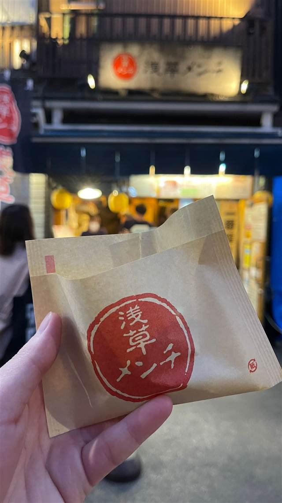

浅草メンチ
幻の豚と呼ばれた高座豚と黒毛和牛を合わせたメンチカツ
浅草メンチ
WHY GO
揚げたてを提供する食べ歩き専門店で高座豚と黒毛和牛のメンチが名物
浅草・伝法院通りにある食べ歩きメンチカツ店。「幻の豚」と呼ばれた神奈川ブランド豚「高座豚」と黒毛和牛を合わせたメンチカツが名物で、行列ができる浅草の新定番グルメ。
TRIVIA
豆知識
- 使用する「高座豚」はかつて「幻の豚」と呼ばれ、現在は「かながわブランド」に選定されている。
REVIEWS
世間の評判
3.49食べログ
メンチカツの肉汁と熱々加減
- 外はサクサクで中は肉汁があふれるジューシーさが評判になっている
- 1枚400円というリーズナブルな価格で気軽に楽しめると満足する声が多い
- 行列ができやすいものの回転が速く思ったより早く買えたという声がある
- 揚げたてはかなり熱いため食べる際にやけどに注意する必要があるという声が多い
食べログ 口コミ1496件
| 看板 | メンチカツ（浅草メンチ） |
|---|---|
| こだわり | かつて「幻の豚」と呼ばれた神奈川ブランド豚「高座豚」と黒毛和牛をブレンドし、毎日一つひとつ手作業で揚げている。 |
| どこから | 都心 |
| 行くなら | 行列 |
| 営業時間 | 月〜日 10:00-19:00 |
| 予約 | 予約不可 |
| 場所 | 浅草駅 東京都台東区浅草 |
| メモ | 浅草・伝法院通り商店街に位置し、行列が絶えない食べ歩き店。まずは何もつけず、次にからしをつけて食べるのがすすめ。 |
食べたもの：メンチカツ